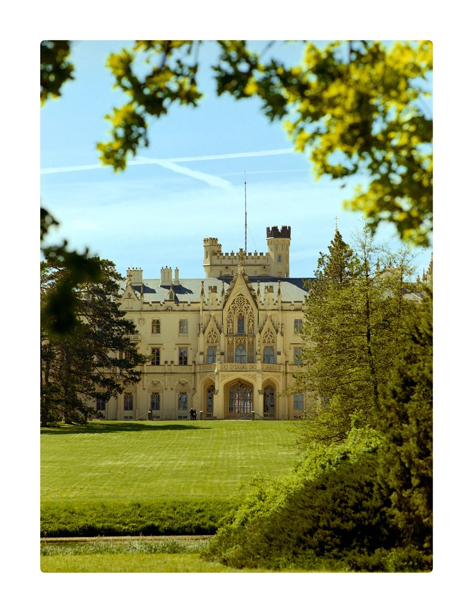
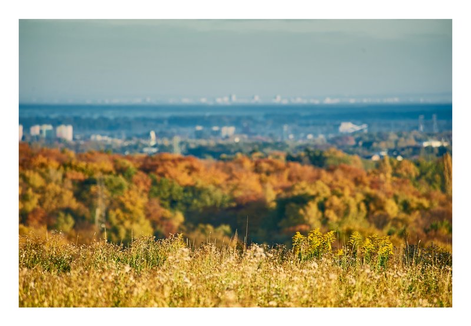

Analogos
Analogos
To mój osobisty projekt, stworzony z myślą o fotografii analogowej, w głównej mierze opartej na średnim formacie, i moją ulubioną w tym obszarze Mamiya 645 pro.
To powrót do pierwotnej radości z fotografii: konieczności czekania na rezultat i świadomego ograniczania się w momencie naciskania spustu migawki. Tak, aby mając mniej, starać się bardziej.

Krajobrazy
Krajobrazy
W obiektywie poszukuję ulotnych chwil i unikalnych perspektyw w Beskidach – moim miejscu na ziemi. To tu, w dobrze znanych zakątkach, staram się odnaleźć nowe spojrzenia na to, co zostało już niezliczoną ilość razy ukazane.
Moje kadry to moja wizja świata – próba uchwycenia jego piękna i spokoju w sposób, który jest dla mnie najbardziej osobisty.

Fotografie
Fotografie
Czegokolwiek bym tutaj nie napisał, nie będzie to miało większego znaczenia :)